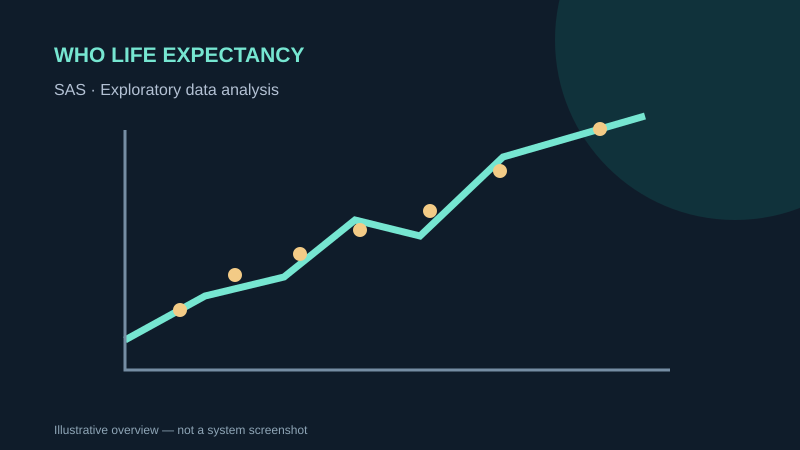

SAS · DATA MANAGEMENT
WHO Life Expectancy Data Management
A healthcare data-management and exploratory analysis project based on country-level life-expectancy indicators.
SAS StudioEDAData cleaningFeature engineering

Concept illustration · descriptive artwork, not a screenshot of the submitted system
OVERVIEW
What the project is about
The supplied raw WHO Life Expectancy CSV contains 2,938 country-year observations and 22 variables, covering 193 countries over 2000–2015. A separate cleaned CSV contains 2,938 rows and 8 columns.
MY DOCUMENTED WORK
My contribution
- Participated in group coursework on exploratory data analysis, cleaning, transformation and reduction.
- The provided report's member attribution cells contain placeholders, so no particular SAS step is credited personally without confirmation.
METHODS & DELIVERABLES
Key work covered
- Descriptive statistics, distributions and missing-value checks
- Median imputation and duplicate handling in the provided SAS script
- GDP log transform, life-expectancy categorization and selected features
- Raw and cleaned datasets available in this repository
EVIDENCE & SCOPE
What this portfolio does and does not claim
The report describes a 16-variable final reduction, whereas the uploaded SAS script and cleaned CSV describe an 8-variable file. The script has not been executed or independently verified here.